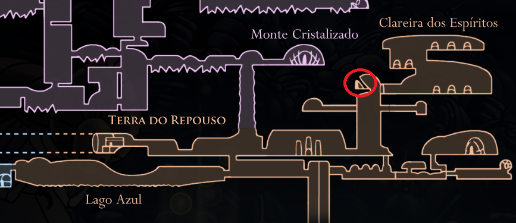

Amuleto transitório criado para aqueles que usam o Ferrão Dos Sonhos e coletem Essência. Permitir ao portador carregar o Ferrão dos Sonhos mais rapidamente e coletar mais ALMA atingindo inimigos.

Portador Dos Sonhos
Fale com a Vidente na Terra do Repouso, depois que coletar 700 essências
ela te entregára o amuleto.
